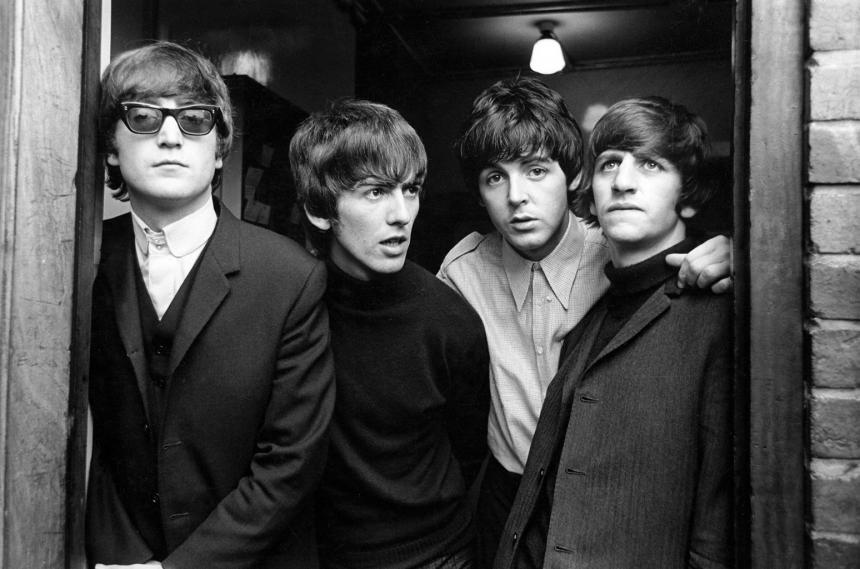
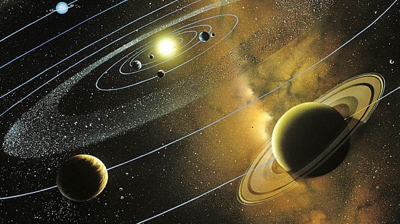

Tributo a The Beatles

La Orquesta Filarmónica de Medellín celebrará la carrera musical de la agrupación británica The Beatles, quienes marcaron la historia del rock durante la década de los 60s y 70s, durante esta velada la Orquesta estará acompañada por Claudia Gómez (voz y guitarra) y Julián Cardona (guitarra), bajo la dirección de Gonzalo Ospina.
Navegación por los planetas

Los planetas no están quietos; al contrario, tienen diversos movimientos. Los más importantes son dos: el de rotación y el de translación.Por el de rotación, giran sobre sí mismos alrededor del eje. Ésto determina la duración del día del planeta. Por el movimiento de translación, los planetas describen órbitas alrededor del Sol. Cada órbita es el año del planeta. Cada planeta tarda un tiempo diferente para completarla. Cuanto más lejos, más tiempo. Giran casi en el mismo plano, excepto Plutón*, que tiene la órbita más inclinada, excéntrica y alargada.